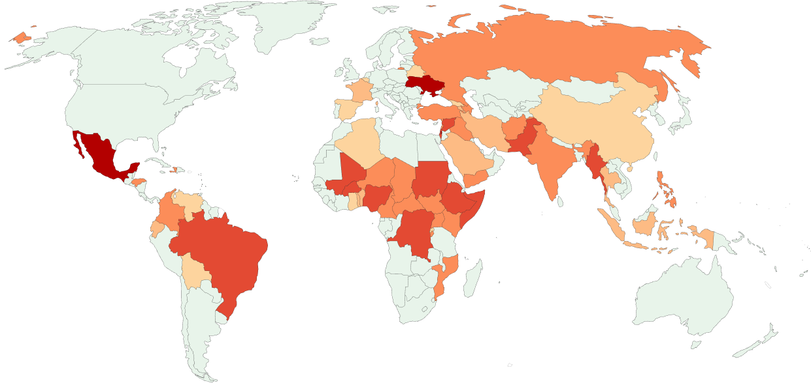

Since 1800, more than
37 million
people worldwide have died while actively fighting in wars.
Included are deaths of combatants and civilians due to fighting in armed
conflicts that were ongoing that year.
Even more armed conflicts are happening since 2011
Included are deaths of combatants and civilians due to fighting in armed
conflicts that were ongoing that year.
21st century War
Statistics
#pacifism
References
d
About
Since 1800, more than 37 million people worldwide have died while actively
fighting in wars.
The number would be much higher still if it also considered the civilians who died due to the fighting, the increased number of deaths from hunger and disease resulting from these conflicts, and the deaths in smaller conflicts that are not considered wars.1
Wars are also terrible in many other ways: they make people’s lives insecure, lower their living standards, destroy the environment, and, if fought between countries armed with nuclear weapons, can be an existential threat to humanity.
The number would be much higher still if it also considered the civilians who died due to the fighting, the increased number of deaths from hunger and disease resulting from these conflicts, and the deaths in smaller conflicts that are not considered wars.1
Wars are also terrible in many other ways: they make people’s lives insecure, lower their living standards, destroy the environment, and, if fought between countries armed with nuclear weapons, can be an existential threat to humanity.
No data
0
<1
10
100
1,000
10,000
Data source: Uppsala Conflict Data Program (2024); Natural Earth (2022)
Deaths in armed conflicts based on where they occurred, 2023

2023
1991
1995
1999
2003
2007
2011
2015
2019
0
60
120
180
One-sided violence
Extrasystemic
Non-state
Intrastate
Interstate
Data source: Uppsala Conflict Data Program (2024)
Note: Some conflicts affect several regions. The sum across all regions
can therefore be higher than the global number.
Number of armed conflicts, World
Included are interstate¹, intrastate², extrasystemic³, non-state⁴
conflicts, and one-sided violence⁵ that were ongoing that year
540 people dies every day. About 420 of them dies by “‘indirect deaths”
caused by the deterioration of economic, environmental, psychological and
health conditions.
This many has died by war every day